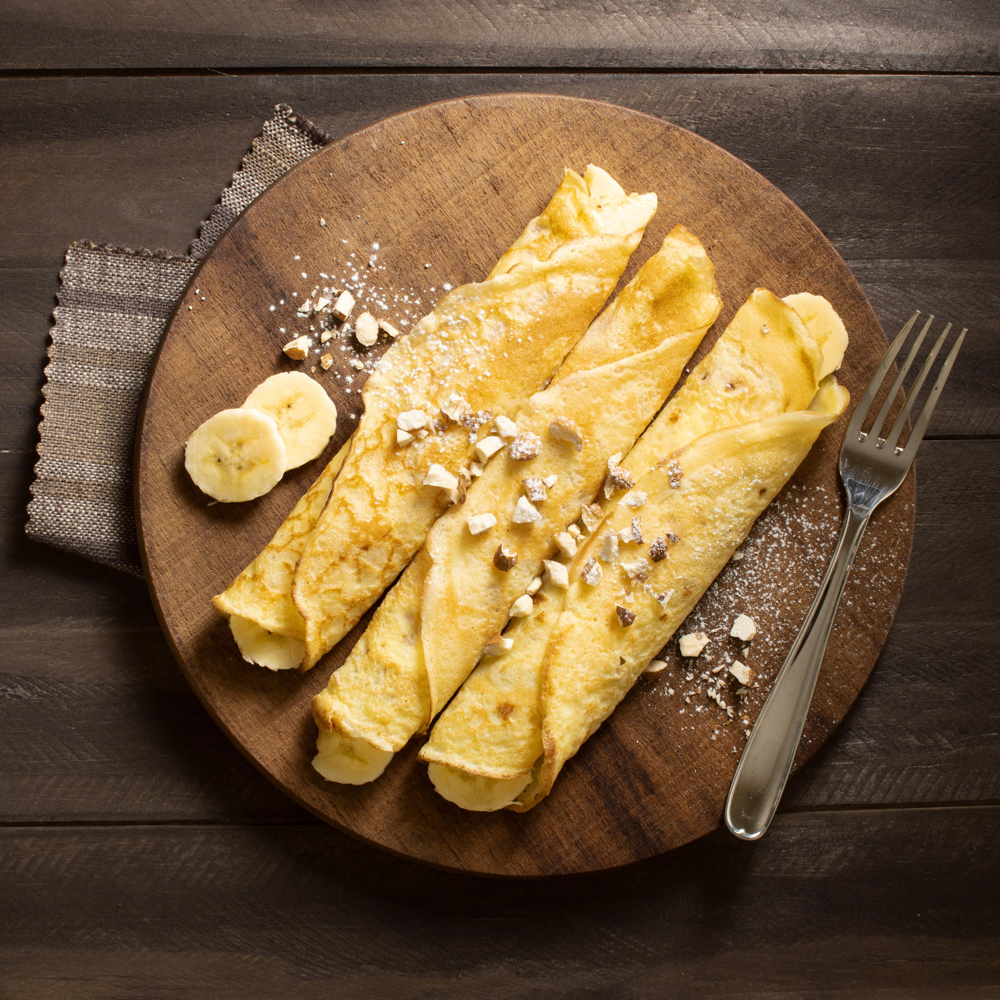

O JEITO CERTO DE PREPARAR SUA REFEIÇÃO
Aqui você encontrará o passo a passo de como preparar uma refeição em suas própria casa juntamente com sugestões para economizar tempo na cozinha e orientações sobre a preservação de alimentos.

Panqueca de Aveia
A panqueca de aveia é uma ótima opção saudável e nutritiva para lanches ou refeições principais. Vegana, sem glúten e sem farinha, é simples de ser preparada e pode ser servida com acompanhamentos salgados ou doces.
Ingredientes
Modo de preparo
- Adicione a aveia em flocos, a água e o sal no copo de um liquidificador. Misture e deixe os ingredientes descansarem por 10 minutos para que a aveia hidrate. Ela absorve a água nesse tempo e fica mais macia.
- Bata bem até obter um creme liso. Adicione mais água, caso necessário. Queremos uma massa fluida, mas não tão líquida.
- Distribua a massa em uma frigideira antiaderente aquecida, em fogo médio, e cozinhe até a panqueca firmar. Em seguida, vire a panqueca e cozinhe por mais alguns minutos.
- Retire da frigideira e enrole com as mãos para deixá-la maleável. Sirva, em seguida, com os acompanhamentos de sua preferência.